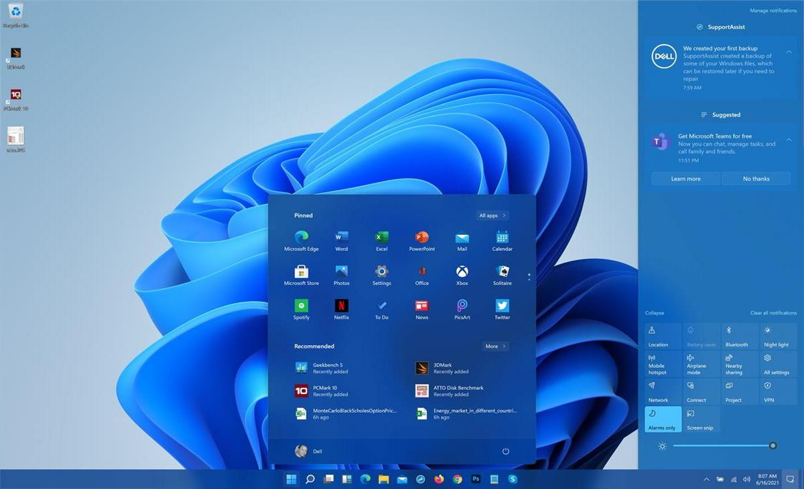
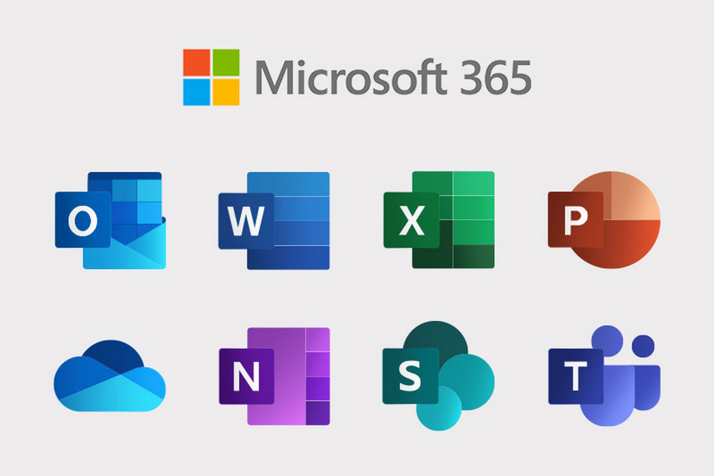
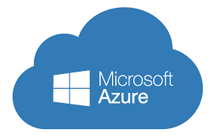
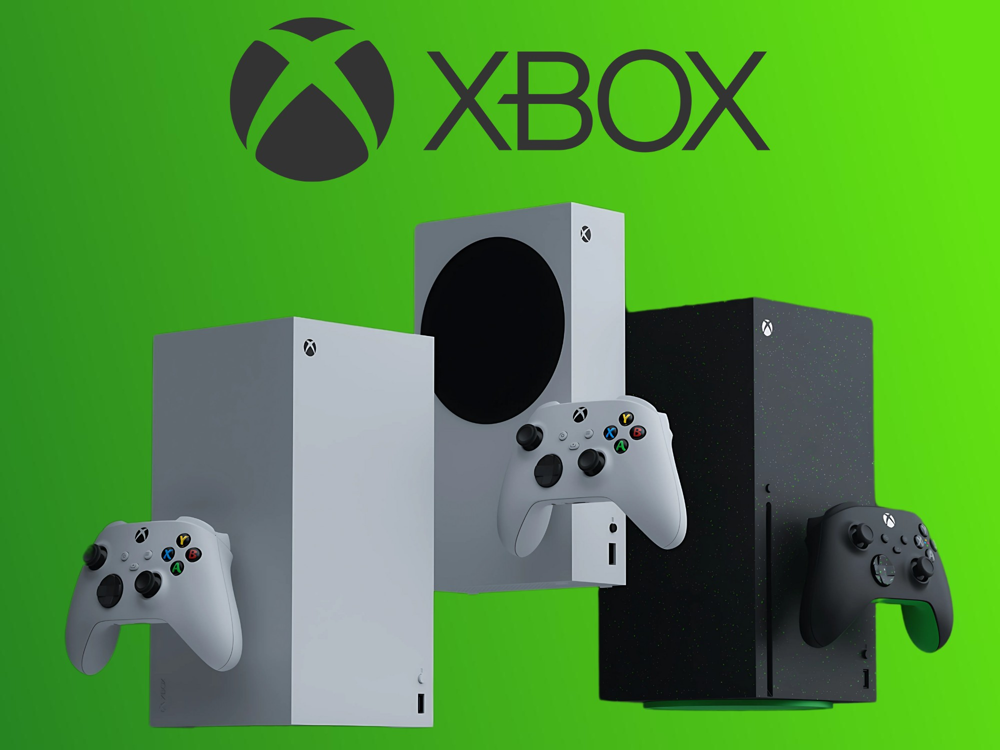

Microsoft известна не просто своими продуктами, а тем, как она формировала целые направления в технологиях. Многие разработки компании стали стандартами индустрии и используются миллиардами людей по всему миру.


Линейка Windows — это основа персональных компьютеров на протяжении десятилетий. Microsoft сделала интерфейсы понятными и доступными, внедрив такие элементы как окна, панели задач и привычное меню «Пуск».
Windows — это не просто система, а платформа, на которой выросла вся индустрия ПК.
Microsoft Office стал стандартом для работы с документами, таблицами и презентациями. Он используется в школах, университетах и компаниях по всему миру.


Платформа Azure стала одним из ключевых продуктов Microsoft в XXI веке. Она позволяет хранить данные, запускать приложения и работать с искусственным интеллектом через интернет.
С запуском Xbox компания вышла на рынок развлечений. Сегодня это не просто консоль, а целая экосистема с онлайн-сервисами и подписками.
| Направление | Продукт | Влияние |
|---|---|---|
| ОС | Windows | Стандарт для ПК |
| Офис | Office | Работа и обучение |
| Облако | Azure | Будущее технологий |
| Игры | Xbox | Развлечения |
Разработки Microsoft не просто решают задачи — они формируют привычки пользователей. От работы с документами до игр и облачных вычислений — компания охватывает почти все сферы цифровой жизни.
Именно благодаря таким продуктам технологии становятся ближе, понятнее и доступнее для каждого человека.